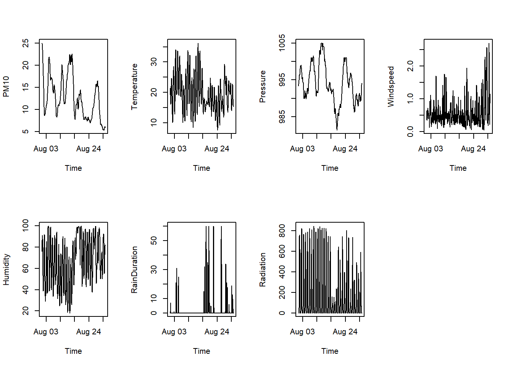

temperature <- -10
if(temperature < 0){
print("It is freezing.")
}[1] "It is freezing."For now, the course has focussed primarily on data analysis functions (plotting, data wrangling, reading in data). The next two chapters will have a slightly different focus: the control flow and structure of your code in R. These are important concepts in programming.
If is an important conditional in programming. Using an if structure, you can execute code only if a certain condition is true. An if structure has the following form:
if(condition){
# code to execute if true
}An If statements there takes a single TRUE/FALSE value (or logical expression) called the “condition” and executes the code if the condition is TRUE. For example, the following code will print the text “It is freezing.” to the console only if the temperature is below 0.
temperature <- -10
if(temperature < 0){
print("It is freezing.")
}[1] "It is freezing."An if can be followed by an else block. The code in the else block will be executed when if is FALSE.
temperature <- 9
if(temperature < 0){
print("It is freezing.")
} else {
print("It is not freezing.")
}[1] "It is not freezing."You can use this to chain many if statements together (called else if). For example:
temperature <- 32
if(temperature < 0){
print("It is freezing.") # executed if temperature is < 0
} else if (temperature < 30){
print("It is not freezing.") # executed if temperature is between 0 and 30
} else {
print("It is hot.") # executed if temperature is >= 30
}[1] "It is hot."The code inside of an if or else statement can be of any length - one line of code or hundreds. For example, the following code checks whether there are any issues with measured water quality. If there are, it gives a message and automatically calculates indicators that may be needed to further investigate the low water quality.
water_quality <- c(6.2, 7.8, 5.9, 8.1, 4.5, 7.0)
if (min(water_quality) < 5) {
print("Warning: at least one site has poor water quality")
worst_site_value <- min(water_quality)
summary_stats <- summary(water_quality)
} else {
print("All sites within acceptable range")
}[1] "Warning: at least one site has poor water quality"The If/Else statements introduced above can only take one conditional value. However, we often work with data frames or vectors which contain many observations! For example, consider the weather_goettingen.csv dataset.
weather <- read.csv("data/weather_goettingen.csv")
str(weather)'data.frame': 744 obs. of 8 variables:
$ Time : chr "01.08.2026 01:00" "01.08.2026 02:00" "01.08.2026 03:00" "01.08.2026 04:00" ...
$ PM10 : num 24.9 25 24.9 24.6 24.3 ...
$ Temperature : num 21.3 20.3 19.2 17.9 17 ...
$ Pressure : num 993 993 994 994 994 ...
$ Windspeed : num 0.35 0.52 0.63 0.6 0.46 0.34 0.39 0.52 0.48 0.61 ...
$ Humidity : num 75.9 82.6 86.6 88.1 90 91 87.9 84.3 81.5 75.8 ...
$ RainDuration: int 0 1 0 7 5 0 0 0 0 0 ...
$ Radiation : num 0 0 0 0 0 ...Let’s say we want to add a column “precipitation” and assign it the label “raining” or “not raining” based on whether there is any precipitation. We might consider the following code, but see that it returns an error because the of condition (weather$RainDuration > 0) is not a singular TRUE/FALSE value, but a vector.
if(weather$RainDuration > 0){
weather$precipitation <- "raining"
} else {
weather$precipitation <- "not raining"
}Error in if (weather$RainDuration > 0) {: Bedingung hat Länge > 1This is where the ifelse() function becomes relevant. The ifelse() function takes as arguments the test, a logical condition (like weather$RainDuration > 0) and then assigns one of two values based on whether the condition is true or false.
# assigns "raining" if RainDuration is > 0, "not raining" if it is not
weather$precipitation <- ifelse(test = weather$RainDuration > 0, yes = "raining", no = "not raining")
# column has been added to weather data frame
str(weather)'data.frame': 744 obs. of 9 variables:
$ Time : chr "01.08.2026 01:00" "01.08.2026 02:00" "01.08.2026 03:00" "01.08.2026 04:00" ...
$ PM10 : num 24.9 25 24.9 24.6 24.3 ...
$ Temperature : num 21.3 20.3 19.2 17.9 17 ...
$ Pressure : num 993 993 994 994 994 ...
$ Windspeed : num 0.35 0.52 0.63 0.6 0.46 0.34 0.39 0.52 0.48 0.61 ...
$ Humidity : num 75.9 82.6 86.6 88.1 90 91 87.9 84.3 81.5 75.8 ...
$ RainDuration : int 0 1 0 7 5 0 0 0 0 0 ...
$ Radiation : num 0 0 0 0 0 ...
$ precipitation: chr "not raining" "raining" "not raining" "raining" ...However, ifelse() can not include many lines of code. Since the distinction can sometimes be confusing, the table below summarizes main differences.
| If/Else | ifelse() | |
|---|---|---|
| Input | Single TRUE/FALSE value | Vector of TRUE/FALSE values |
| Output | Many output options, can run many lines of code | Vector of the same length as input vector |
| Main Use Case | Controlling code flow, decision-making | Assigning labels in data frames |
Note that the use cases above are only examples of the most commonly encountered ones. Be creative and you can find many other applications!
You can nest both If/Else and ifelse() statements inside each other; for example:
ifelse(temperature < 0, yes = "freezing", no = ifelse(temperature < 30, yes = "normal", no = "hot"))
… which assigns “freezing” to temperatures below 0; “normal” to temperatures between 0 and 30, and “hot” to temperatures above 30.
However, you can see that this can quickly get confusing. If you are in a situation where you are nesting many ifs and elses, consider checking out the case_when() function from the dplyr package (not covered in this class).
A for loop iterates over the items of a vector (or list, array, data frame column…) and executes the code within the loop repeatedly. For example, the following code loops over the vector 1:10. The loop is executed 10 times. In the first iteration, the variable i takes on the first value of the vector (1) and prints it to the console. In the second iteration, it takes on the second value (2), and so on, until the final value in the vector is reached (10).
for(i in 1:10){
print(i)
}[1] 1
[1] 2
[1] 3
[1] 4
[1] 5
[1] 6
[1] 7
[1] 8
[1] 9
[1] 10The values within the vector can be any values; they do not have to start at 1 or be sequential, and they do not have to be numerical.
numbers <- c(-7, 9, 0, 12)
for(i in numbers){
print(i ** 2) # prints i²
}[1] 49
[1] 81
[1] 0
[1] 144The name i for the so called iterator is conventional, but the iterator can take any name.
# create data frame
heights <- data.frame(
name = c("Fagus Sylvatica", "Pinus Silvestris", "Betula pendula"),
height = c(12.7, 17.0, 16.2)
)
# loop over entries in name column and print them to the console
# here, the iterator is named "species"
for(species in heights$name){
print(species)
}[1] "Fagus Sylvatica"
[1] "Pinus Silvestris"
[1] "Betula pendula"For loops are especially useful to avoid repetitive code. While setting up the for loop requires a bit more work than copy-pasting, discovering bugs and making changes to the code within the loop is much easier if it exists only once in your script.
For example, consider the Göttingen weather data. We are again using lubridate (chapter 6) to convert the time column into the POSIXct (datetime) format.
weather <- read.csv("data/weather_goettingen.csv")
weather$Time <- lubridate::dmy_hm(weather$Time) # using lubridate:: to avoid loading the entire package
str(weather)'data.frame': 744 obs. of 8 variables:
$ Time : POSIXct, format: "2026-08-01 01:00:00" "2026-08-01 02:00:00" ...
$ PM10 : num 24.9 25 24.9 24.6 24.3 ...
$ Temperature : num 21.3 20.3 19.2 17.9 17 ...
$ Pressure : num 993 993 994 994 994 ...
$ Windspeed : num 0.35 0.52 0.63 0.6 0.46 0.34 0.39 0.52 0.48 0.61 ...
$ Humidity : num 75.9 82.6 86.6 88.1 90 91 87.9 84.3 81.5 75.8 ...
$ RainDuration: int 0 1 0 7 5 0 0 0 0 0 ...
$ Radiation : num 0 0 0 0 0 ...If we want to calculate the mean of every column (except Time), we could of course simply repeat the code mean(weather$var) seven times. But that is tedious - especially if we imagine having a larger dataset with dozens of columns - and difficult to change if we later on decide we want to instead calculate the standard deviation, or change the name of the data frame.
Instead, we can use a for loop to calculate the means. Since we want to know the means of column 2 to 8, we can loop over those numbers and use [square brackets] to access the columns by their number.
for(column_number in 2:8){
print(mean(weather[, column_number]))
}[1] 12.74924
[1] 19.74321
[1] 994.0759
[1] 0.5963038
[1] 67.5
[1] 2.451613
[1] 170.0863This code is equivalent to:
print(mean(weather[, 2]))
print(mean(weather[, 3]))
print(mean(weather[, 4]))
print(mean(weather[, 5]))
print(mean(weather[, 6]))
print(mean(weather[, 7]))
print(mean(weather[, 8]))The code within the {curly brackets} can be as complex as you want. For example, we can use a for loop to create a plot for every variable using the same principle as above. We use a little trick for the y axis label: We use names() to access the column names and then select the name of the ith column.
# set up grid for the plots
par(mfrow = c(2, 4))
# for loop for the plots
for(i in 2:8){
plot(x = weather$Time, y = weather[, i], type = "l",
xlab = "Time",
ylab = names(weather)[i]
)
}
The apply() function in R loops over the rows or columns of a data frame, similarly to the for loops shown above. Unlike a for loop, apply() does not require defining an iterating variable and no start or end of the loop; it will automatically loop over all columns/rows. apply() also has the benefit of being faster than a for loop for large data sets.
Let’s load the built-in trees dataset in R.
data(trees)
str(trees)'data.frame': 31 obs. of 3 variables:
$ Girth : num 8.3 8.6 8.8 10.5 10.7 10.8 11 11 11.1 11.2 ...
$ Height: num 70 65 63 72 81 83 66 75 80 75 ...
$ Volume: num 10.3 10.3 10.2 16.4 18.8 19.7 15.6 18.2 22.6 19.9 ...apply() takes three mandatory arguments: the dataset in question, FUN (the function to apply), and MARGIN. MARGIN defines whether apply() loops over the rows or columns of the data. 1 means rows, 2 means columns. Remember RoCo: Rows First, Columns Second.
For example, to calculate the mean of every column:
apply(trees, MARGIN = 2, FUN = mean) Girth Height Volume
13.24839 76.00000 30.17097 You can also loop over rows instead. The following example calculates the sum of the values in each row.
apply(trees, MARGIN = 1, FUN = sum) [1] 88.6 83.9 82.0 98.9 110.5 113.5 92.6 104.2 113.7 106.1 114.5 108.4
[13] 108.8 102.0 106.1 109.1 131.7 126.7 110.4 102.7 126.5 125.9 124.8 126.3
[25] 135.9 153.7 155.2 156.2 149.5 149.0 184.6A downside of apply() is that it loops over all columns, even if the function does not make sense for the data type of a certain column. For example, if we apply the mean() function to the columns of our weather data frame, we encounter an error since the Time column is not numeric.
apply(weather, MARGIN = 2, FUN = mean)Warning in mean.default(newX[, i], ...): Argument ist weder numerisch noch
boolesch: gebe NA zurück
Warning in mean.default(newX[, i], ...): Argument ist weder numerisch noch
boolesch: gebe NA zurück
Warning in mean.default(newX[, i], ...): Argument ist weder numerisch noch
boolesch: gebe NA zurück
Warning in mean.default(newX[, i], ...): Argument ist weder numerisch noch
boolesch: gebe NA zurück
Warning in mean.default(newX[, i], ...): Argument ist weder numerisch noch
boolesch: gebe NA zurück
Warning in mean.default(newX[, i], ...): Argument ist weder numerisch noch
boolesch: gebe NA zurück
Warning in mean.default(newX[, i], ...): Argument ist weder numerisch noch
boolesch: gebe NA zurück
Warning in mean.default(newX[, i], ...): Argument ist weder numerisch noch
boolesch: gebe NA zurück Time PM10 Temperature Pressure Windspeed Humidity
NA NA NA NA NA NA
RainDuration Radiation
NA NA In this case, we have to use [square brackets] to select only the columns we want to apply the function to.
apply(weather[, 2:8], MARGIN = 2, FUN = mean) PM10 Temperature Pressure Windspeed Humidity RainDuration
12.7492392 19.7432124 994.0759409 0.5963038 67.5000000 2.4516129
Radiation
170.0862903 To loop over a singular vector or data frame column, you can use the sapply() function instead. This function requires only the data and the function; the MARGIN argument is not necessary since vectors only have one margin.
# calculate the square root of numbers 1 - 10
sapply(1:10, FUN = sqrt) [1] 1.000000 1.414214 1.732051 2.000000 2.236068 2.449490 2.645751 2.828427
[9] 3.000000 3.162278# round humidity values
sapply(weather$Humidity, FUN = round) [1] 76 83 87 88 90 91 88 84 82 76 65 53 49 43 42 39 40 40
[19] 42 44 52 62 69 75 80 84 87 89 91 92 90 85 68 48 42 38
[37] 36 34 32 29 29 32 34 38 44 48 53 56 60 70 75 80 83 85
[55] 83 71 59 46 42 39 36 38 39 38 37 61 96 97 98 98 99 99
[73] 100 100 100 99 98 99 99 98 97 88 68 58 53 45 40 39 42 44
[91] 52 61 71 77 82 84 91 96 97 98 98 99 99 98 91 66 54 48
[109] 43 42 40 42 42 45 51 54 65 75 82 86 87 87 88 89 78 75
[127] 71 63 55 48 46 42 34 37 40 43 44 44 45 48 54 65 74 74
[145] 74 82 86 88 90 91 89 78 67 59 52 46 45 45 50 52 51 49
[163] 49 55 64 74 80 84 88 90 92 93 93 94 94 89 71 54 47 44
[181] 39 36 34 33 32 34 36 39 42 43 44 50 58 67 73 77 81 83
[199] 82 73 58 42 36 34 32 29 26 25 25 28 33 36 44 52 54 57
[217] 60 62 63 68 71 74 72 60 44 36 34 34 29 27 27 33 47 50
[235] 49 52 58 65 70 72 69 71 77 84 88 90 89 81 65 52 48 44
[253] 41 37 35 34 34 36 39 44 52 61 69 73 77 81 82 85 87 89
[271] 87 80 66 50 38 35 30 27 26 27 28 30 32 39 38 41 40 45
[289] 57 64 68 73 77 80 78 66 53 38 30 27 23 19 20 21 21 22
[307] 24 27 28 28 39 47 51 57 60 63 68 71 70 58 48 35 27 23
[325] 21 20 19 18 18 20 24 33 38 46 51 54 57 60 64 65 67 68
[343] 70 61 42 32 31 27 28 26 28 34 36 39 44 50 58 66 70 77
[361] 82 86 84 81 82 84 85 81 75 66 59 56 51 47 44 45 48 50
[379] 54 57 58 62 69 75 78 81 84 86 89 89 86 82 79 74 71 69
[397] 77 72 72 76 76 80 74 81 93 95 96 97 97 98 98 98 99 99
[415] 99 99 98 97 94 93 94 95 98 98 98 99 99 99 99 99 99 100
[433] 99 99 99 99 99 99 98 98 98 98 97 90 81 78 79 63 64 74
[451] 87 95 97 98 99 99 99 100 100 100 100 100 100 100 98 83 67 62
[469] 60 51 44 43 46 45 47 60 69 72 67 75 83 84 87 91 93 95
[487] 94 81 70 58 54 53 53 52 51 54 55 56 62 72 79 84 85 86
[505] 86 88 93 94 96 97 97 97 95 82 77 65 55 46 45 43 51 48
[523] 51 57 63 68 76 83 87 90 93 94 92 90 87 83 79 70 62 61
[541] 56 53 50 52 50 52 57 69 80 84 89 91 93 94 95 96 96 97
[559] 97 96 86 70 63 58 54 47 45 44 47 50 54 59 70 74 79 84
[577] 80 86 90 85 90 94 93 76 66 57 51 46 41 38 38 38 39 43
[595] 51 57 63 66 73 91 94 95 96 97 98 98 95 90 89 87 87 85
[613] 84 82 81 78 82 82 83 84 85 88 93 95 97 98 98 98 99 99
[631] 100 99 95 76 63 60 54 48 46 46 49 54 57 59 59 60 62 64
[649] 65 68 68 68 75 91 94 92 84 73 65 66 66 68 68 67 71 88
[667] 92 93 96 97 97 98 98 98 98 97 97 94 95 90 78 69 66 58
[685] 57 54 53 54 50 51 54 56 63 64 64 64 66 68 72 74 74 74
[703] 76 76 72 66 58 52 50 52 55 55 54 55 58 69 78 83 86 89
[721] 91 91 90 92 93 91 89 85 84 71 65 63 56 55 59 67 65 73
[739] 74 76 74 80 81 82In both apply() and sapply(), you can supply arguments to the function FUN by adding them as arguments to apply()/sapply(). For example, you could round the humidity values to one decimal.
sapply(weather$Humidity, FUN = round, digits = 1) [1] 75.9 82.6 86.6 88.1 90.0 91.0 87.9 84.3 81.5 75.8 65.0 53.4 49.1 43.3 41.7
[16] 38.9 39.5 40.3 42.0 43.9 52.5 62.4 69.3 75.2 79.6 83.7 87.0 89.3 91.0 91.8
[31] 90.4 85.4 67.7 48.2 42.5 38.2 36.4 34.1 32.3 29.1 28.9 31.5 34.2 37.9 44.4
[46] 48.3 52.7 56.4 59.7 69.5 75.2 79.5 83.1 85.3 82.7 71.3 58.7 46.3 41.7 39.4
[61] 36.5 37.9 38.7 38.1 37.3 60.7 96.1 97.0 97.8 98.3 98.9 99.3 99.7 99.9 99.7
[76] 99.3 98.3 98.8 98.6 98.5 96.7 87.8 68.0 57.8 53.0 44.8 39.8 38.7 42.0 44.1
[91] 51.5 60.8 71.4 76.6 82.5 84.0 91.2 95.9 97.1 97.6 98.2 98.6 99.0 98.0 90.8
[106] 65.7 54.3 48.2 42.8 41.5 39.7 41.7 42.2 44.7 51.2 54.1 65.2 75.0 82.1 86.1
[121] 86.8 87.2 88.1 89.0 78.1 75.4 71.1 62.8 55.3 48.3 45.5 42.5 33.9 37.4 40.5
[136] 42.9 44.1 44.0 45.2 47.9 53.9 65.4 73.6 74.0 74.1 81.7 85.5 88.0 90.0 91.2
[151] 89.3 78.0 67.1 59.0 52.0 46.5 45.2 45.0 49.8 52.5 51.0 48.9 48.9 54.7 64.2
[166] 74.3 79.8 84.5 87.9 90.5 92.1 93.3 93.0 93.8 94.2 89.4 70.8 53.6 46.9 43.5
[181] 39.2 36.1 34.1 32.6 31.5 33.5 35.7 39.4 41.9 42.9 44.5 49.9 57.5 66.9 72.8
[196] 77.1 80.6 83.0 81.9 72.8 57.7 42.4 36.5 34.4 32.2 29.2 25.6 24.7 25.1 28.4
[211] 32.7 36.5 43.8 51.8 54.3 57.0 60.2 61.9 63.2 68.3 71.4 74.0 72.5 59.8 43.6
[226] 36.3 34.1 34.0 29.1 27.1 27.1 32.9 46.8 50.3 49.2 52.4 58.2 65.3 70.3 72.3
[241] 68.8 71.0 76.7 83.6 87.8 90.0 88.9 81.0 64.6 52.4 48.3 44.2 40.7 37.4 35.3
[256] 34.5 34.5 36.0 38.7 43.9 51.8 61.1 68.6 72.6 77.2 80.6 82.3 84.8 87.4 88.7
[271] 87.4 80.0 66.5 50.5 38.5 34.9 30.4 27.2 25.8 26.6 27.9 29.7 31.7 39.3 37.7
[286] 40.8 40.5 44.6 57.2 63.9 67.8 73.4 76.9 80.2 78.2 66.3 52.9 37.6 30.0 27.1
[301] 22.6 18.7 19.9 21.1 21.3 22.3 23.5 27.0 27.5 27.9 39.4 46.6 51.3 56.6 60.1
[316] 63.0 68.0 71.0 70.2 58.3 48.1 34.9 27.3 23.1 20.7 20.0 18.8 17.9 18.4 19.9
[331] 23.5 33.3 38.1 46.3 50.9 54.1 57.3 59.5 63.8 65.3 67.2 68.5 69.5 61.2 42.2
[346] 32.1 30.7 27.1 27.8 25.7 27.9 33.5 35.8 39.1 44.1 49.6 57.7 65.7 69.7 77.1
[361] 81.8 86.1 84.4 81.2 81.8 84.1 85.3 81.2 75.4 65.5 58.8 56.1 51.2 47.0 44.4
[376] 45.0 47.7 49.7 53.6 56.9 58.1 62.5 69.1 74.9 77.5 80.8 83.8 86.4 88.6 88.9
[391] 86.2 82.3 79.1 73.5 71.3 68.7 76.7 72.1 71.9 76.0 75.7 79.7 73.8 80.9 93.0
[406] 95.4 96.4 97.1 97.4 98.0 98.3 98.5 98.8 99.1 99.0 98.8 98.1 96.7 94.3 93.3
[421] 93.5 95.3 97.5 97.6 98.3 98.7 99.0 98.8 98.9 99.3 99.4 99.6 99.2 99.3 99.3
[436] 99.4 99.1 99.0 98.2 98.0 98.1 98.0 97.2 89.9 80.6 78.1 78.7 63.3 63.5 74.5
[451] 87.2 94.6 96.9 98.0 98.7 99.1 99.3 99.5 99.5 99.7 99.8 99.9 99.9 99.6 97.9
[466] 82.8 67.0 62.3 60.1 51.1 44.3 42.9 45.5 45.2 47.0 59.5 69.4 72.0 66.8 75.0
[481] 82.8 84.5 87.2 91.2 93.2 94.6 93.7 80.8 69.7 57.5 53.8 52.6 52.8 51.6 50.7
[496] 53.5 54.6 56.3 61.9 72.4 78.8 84.3 85.2 85.5 86.0 87.9 92.7 93.9 95.7 96.7
[511] 97.4 96.9 94.9 81.9 77.3 64.6 54.8 46.4 44.7 42.8 51.1 48.3 51.1 57.4 63.2
[526] 68.0 76.3 83.0 87.0 90.2 92.7 94.3 91.9 89.8 87.0 83.2 78.7 69.9 62.5 60.8
[541] 56.2 53.3 49.6 51.9 50.1 51.5 57.0 68.8 79.5 84.3 88.9 91.2 93.2 94.4 94.6
[556] 95.5 96.4 96.6 96.9 96.2 85.6 70.4 63.1 58.3 54.3 47.4 44.8 43.9 47.3 50.2
[571] 54.4 59.4 69.8 74.5 79.4 83.6 80.4 85.6 89.7 85.1 89.8 93.7 92.9 76.0 66.1
[586] 57.3 51.4 46.2 41.1 38.2 37.8 37.9 39.4 43.2 51.4 56.6 63.2 66.1 72.7 90.8
[601] 93.9 95.4 96.4 97.2 97.7 97.8 95.1 90.5 88.8 86.8 87.3 85.1 84.5 82.3 81.0
[616] 78.1 81.7 81.8 82.8 83.9 85.1 88.1 93.1 95.4 96.7 97.6 98.1 98.5 98.9 99.3
[631] 99.6 99.3 94.8 75.5 63.0 60.2 53.6 48.1 45.9 46.4 49.4 53.5 57.2 59.4 59.2
[646] 59.5 61.5 63.7 64.9 67.8 68.0 68.0 75.1 90.9 94.3 91.5 84.0 72.7 65.1 65.9
[661] 66.4 68.0 68.0 67.4 71.0 88.3 91.5 93.4 95.6 96.9 96.8 97.9 98.4 98.2 97.7
[676] 97.2 96.6 93.7 94.6 90.0 78.1 69.1 65.6 58.4 56.8 54.2 52.7 53.6 50.3 50.8
[691] 53.9 55.9 62.7 64.2 64.1 64.3 65.7 67.6 72.0 74.1 73.7 74.4 75.5 75.7 72.4
[706] 66.2 58.2 51.7 50.2 52.3 55.0 55.4 54.3 55.1 58.4 68.9 77.8 82.7 86.3 89.2
[721] 91.1 91.4 90.3 92.0 92.7 90.6 88.8 85.4 83.8 70.9 65.4 63.0 55.7 55.1 59.1
[736] 67.4 64.9 72.7 74.5 75.8 73.5 79.9 81.4 82.0